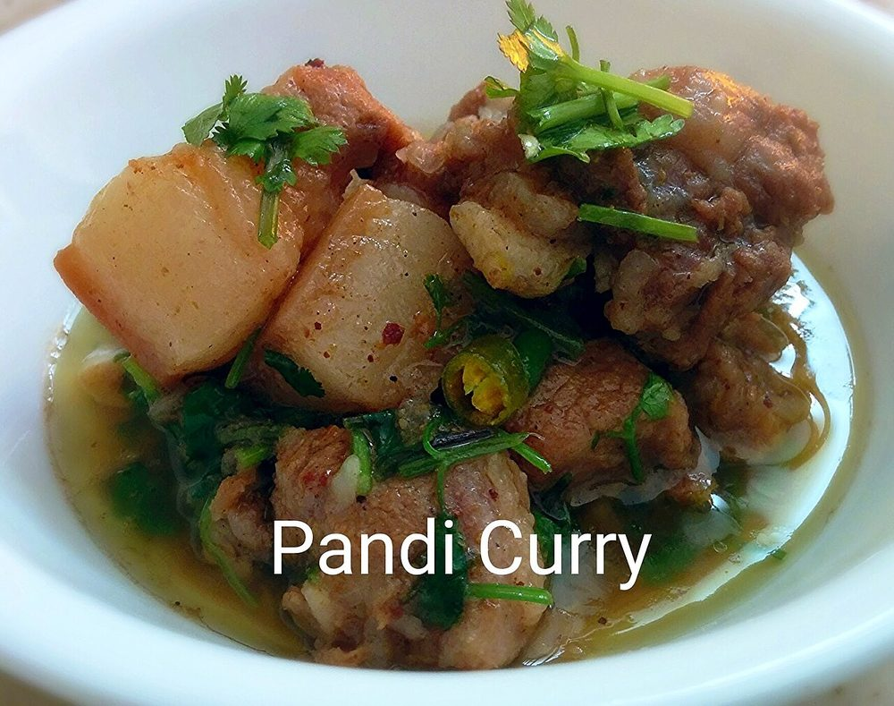

Allergens: none of the ten listed below
Checked against the ingredient list for ten allergens: milk, egg, fish, crustaceans, tree nuts, peanuts, sesame, mustard, soy and gluten. Brands vary, so read the label on anything new to you.
Ingredients
Quantities for 6.
- 1 kg shoulder with its fat and skin, cut into 3 cm cubes Porkfat matters here. A lean cut gives a thin curry
- 1 tsp Turmeric
- 2 tbsp, coarsely crushed Black Pepperthe backbone of the dish, not a garnish
- 2 large, finely chopped Onion
- 12 cloves, crushed Garlic
- 2 inch piece, finely chopped Ginger
- 3, slit lengthways Green Chilli
- 2 sprigs Curry Leaves
- 2 tbsp Coriander Powder
- 1 tsp, dry-roasted and crushed Cumin Seeds
- 2 tsp Chilli Powder
- 1 tsp Kashmiri Chillifor colour without extra heatoptional
- 1 inch piece Cinnamonoptional
- 4 Clovesoptional
- 2 tbsp Vinegarstands in for kachampuli, the dark Coorg sour vinegar pressed from wild garcinia; use it sparingly and only at the end, as a sour finish rather than a marinade
- 1 tbsp Coconut Oilonly if your pork is lean; a fatty cut renders plenty of its ownoptional
- to taste Salt
- 250 ml, hot Water
Cookware
stovetop, kadhai
Before you start
- Cut the pork the evening before if you can and keep it refrigerated, uncovered, so the surface dries. It browns far better.
- Crush the black pepper in a mortar rather than a grinder. You want gritty, uneven pieces, not powder.
- Have the vinegar measured and standing by the stove; it goes in off the heat and the timing is easy to miss.
Method
- Put the pork, turmeric, 1 tsp of the crushed pepper and 1 tsp salt in a heavy pot over medium heat, with no oil and no water.Coorg pork starts dry so it renders its own fat. Adding liquid now gives you boiled meat.
- Cover and cook 20 minutes, stirring twice; the pork throws off a lot of cloudy grey liquid.
- Uncover, raise the heat and boil that liquid away until the fat starts spitting and the cubes catch gold at the edges, about 15 minutes.
- Push the meat to one side and add the onion, ginger, garlic, green chilli and curry leaves to the rendered fat.
- Fry the aromatics until the onion is soft and evenly gold, about 10 minutes, then stir everything together.
- Add the coriander powder, crushed cumin, chilli powder, kashmiri chilli, cinnamon and cloves and fry 3 minutes until the pot smells toasted.Keep the heat moderate. Powdered spice burns in hot pork fat in under a minute and turns the curry bitter.
- Pour in the hot water, scrape the base clean, cover and simmer on low 45 minutes until the pork cuts with the side of a spoon.
- Stir in the remaining crushed black pepper and simmer uncovered 10 minutes, until the gravy is dark and clings to the meat.
- Take the pot off the heat, stir in the vinegar, cover and leave it 10 minutes before serving.Add the sour off the heat. Boiled vinegar goes flat and dull, and the whole point of kachampuli is a bright edge against the fat.
- Taste and correct salt and sourness, adding vinegar a half teaspoon at a time. Serve with kadambuttu or otti.
Storage
Improves overnight. Keeps 4 days refrigerated in a covered box, or 2 months frozen. Reheat gently on the stove with a splash of water and do not add more vinegar on reheating.
Nutrition Medium estimate
High protein: 38 g a serving, 48% of the calories
| Per serving242 g | Per 100 g | |
|---|---|---|
| Calories | 315 kcal | 130 kcal |
| Protein | 37.7 g | 16 g |
| Carbohydrate | 12.3 g | 5 g |
| of which sugars | 2.5 g | 1 g |
| Fibre | 3.5 g | 1 g |
| Fat | 12.6 g | 5 g |
| of which saturated | 5.3 g | 2 g |
| of which unsaturated | 6.1 g | 2 g |
Ingredients added to taste rather than by weight are counted as zero, so the true figure is a little higher than shown. Worked out from the listed quantities. Some of the ingredient list is given to taste rather than by weight, so treat these as a guide. Ingredients given to taste rather than by weight are counted as zero, so the real figure is a little higher than this. The + says so. Some ingredients have no exact match in the nutrient database and use the nearest equivalent: curry leaves. Estimated from raw ingredients using USDA FoodData Central. Cooking changes are not modelled, and added salt is excluded, so sodium is not given.
Written and checked against sources, not cooked in a test kitchen. Times, yields, allergens and nutrition are worked out rather than measured, so use your own judgement on doneness and on storing. More in About.